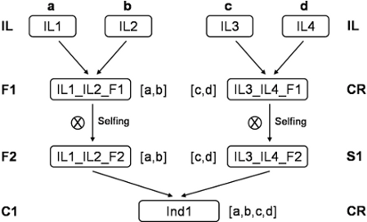

Data preparation - Genotypes/Pedigree file (.dat)
The genotypes/pedigree file should contain individuals, pedigree information and genotypic data. It also requires a header line specifying the information in each column. The file organization will be exemplified below for the following MAS pedigree.

Figure 2: example of a multiparental design
The default structure for the input file (corresponding to Fig. 2 above) can be represented as follows:
| Id | P1 | P2 | Step | Cycle | Group | Mk1 | Mk2 | Mk3 | ... | |
|---|---|---|---|---|---|---|---|---|---|---|
| IL1 | a | a | IL | IL | - | T | C | A | ... | [1] |
| IL2 | b | b | IL | IL | - | C | C | G | ... | |
| IL3 | c | c | IL | IL | - | T | C | A | ... | |
| IL4 | d | d | IL | IL | - | T | C | G | ... | |
| IL1_IL2_F1 | IL1 | IL2 | CR | F1 | ... | [2] | ||||
| IL3_IL4_F1 | IL3 | IL4 | CR | F1 | ... | |||||
| IL1_IL2_F2 | IL1_IL2_F1 | IL1_IL2_F1 | S1 | F2 | - | T | C | A | ... | [3] |
| IL3_IL4_F2 | IL3_IL4_F1 | IL3_IL4_F1 | S1 | F2 | - | T | C | G/A | ... | |
| Ind1 | IL1_IL2_F2 | IL3_IL4_F2 | CR | C1 | Ear1 | T | - | G/A | ... | [4] |
| Ind2 | IL1_IL2_F2 | IL3_IL4_F2 | CR | C1 | Ear2 | ... | [5] |
The genotype/pedigree file must be in plain-text, tab-delimited format (no space between fields). The header should not be changed even if the 2 optional columns (Cycle/Group) are left blank (or "-").
After the header line, each line contains the name (Id) of the current individual followed by its parents (P1/P2), the pedigree relationship linking the two generations (Step), assignation to cycle and group (if relevant) and the genotyping data (Mk1-Mkn). Note that this format is very close to the input format of the Flapjack software except that five additional columns (in red) must be added.
Columns of this file correspond to:
Id: corresponds to the name of each individual coded as a character string without any blanks and special characters. It must be unique.
Parent 1, Parent 2: correspond to the name(s) of the parent(s) of the individual (must exist as individuals above in the file except for founder parents). Individuals must be ranked according to generations (from oldest to most recent).
Founder parents of the programme ([1] in table) are assumed to be homozygous lines with no residual heterozygosity. Their pedigree is assumed to be unknown. Parent1, parent2 columns indicate in this case the allele that will be transmitted through generations. This allele is identified as a character strain up to 6 characters. OptiMAS can also handle selection schemes starting from heterozygous individuals (e.g. fruit tree breeding). In this case two virtual inbred lines must be defined for each heterozygous founder (described then as a Cross, see below).
Step: corresponds to the pedigree relationship between the individual and its parent(s):
CR (Cross): indicates that the individual results from a cross between its two parents.
Sn: indicates that the individual results from n (integer between 1 and 20) generations of selfing of its parent (in this case the two parents Id must be identical).
RIL: Recombinant Inbred Lines (assumes that the individual results from an infinite number of selfing generations from an initial F1 hybrid).
DH: Double Haploids (assumes that the individual results from haplo-diploïdisation from an initial F1 hybrid).
IL: indicates founder inbred status (see above).
Cycle: optional information regarding the generation in the programme (e.g. first cycle, second cycle, F2, F4, etc).
Group: optional information regarding another classification criterion (e.g. subprogrammes, families, etc).
Mk1-Mkn: genotyping results. The software can deal with SNPs, microsatellites and any bi/multi allelic marker genotyping technique with either dominant or codominant scoring.
Note that:
The markers present in the genotype/pedigree file must be ordered and match those in the map file (same name and number of markers).
Homozygous genotypes for an allele (e.g. A) can be scored either as A or A/A.
Heterozygotes are expected to be separated by a "/" (e.g. A/G). Heterozygous genotypes are assumed to be unphased (i.e. A/B equivalent to B/A).
Missing data at marker loci are allowed and must be entered as "-" (or can be left blank).
For dominant markers, assuming A dominant vs. a recessive, genotypes presenting allele A must be coded A/-.
Parental inbred lines should not contain missing data.
Description of the genotypes/pedigree file example, in relationship with the multiparental MARS schema (see table above):
[1] Parental line where a is the name given to its alleles (same name for all loci).
[2] Example of a hybrid F1 obtained by intercrossing two parental lines. In this case, the genotype is inferred from parents and does not have to be declared.
[3] Plant issued from a selfing process. The name of the two parents is the same in this case. S1 means that this individual was obtained after one generation of selfing. The number of generation(s) can vary.
[4] Plant issued from the cross between two individuals (in this case, two F2 coming from different parental lines) already declared and genotyped. In this case, the four parental alleles may have been transmitted to this individual.
[5] Plant, without genotyping data information, issued from the cross between two F2 individuals. All possible genotypes will be considered to evaluate the genetic value of this plant.
Given the possibility to include non genotyped individuals (e.g. Ind2), this makes it possible to analyze most common MAS schemes and mating designs. So, if several (non genotyped) steps were required to obtain a specific individual, we must generate virtual individuals in these intermediate steps.